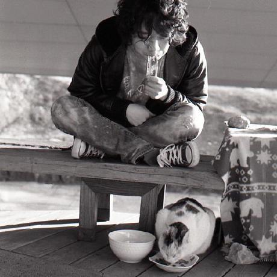

프로그램 상세
연사자 프로필 / 발표 상세
The next big thing in data, healthcare!!

발표자 : 김현중 ( )
시간 : 16:00 ~ 16:40 (40분)
난이도 : 중간
키워드 : k-means, 효율적인 학습, 자동 군집 레이블링, k-means 시각화, pyLDAvis
내용
Bag-of-words model 같은 고차원 데이터에서의 빠른 k-means 학습 방법을 이야기합니다.
k-means 의 학습 결과만 이용하여 각 군집의 레이블을 부여합니다.
pyLDAvis 를 응용하여 군집화 결과를 시각적으로 표현합니다.
대상 청중
k-means 나 LDA 를 이용한 토픽 모델링의 학습 결과 성능을 향상시키고 싶거나, 학습한 결과를 잘 설명하기 위한 방법을 고민하시는 분들과 함께 생각을 나누고 싶습니다.
발표 자료
발표 이해에 도움 되는 사전 지식
텍스트 형식의 문서를 벡터로 표현하는 bag-of-words model 과 데이터 군집화에 이용되는 k-means 와 topic modeling 에 이용되는 LDA 도 아신다고 가정합니다. 하지만 가벼운 리뷰는 발표에 포함되어 있습니다.
LDA 의 학습 결과를 시각화하도록 도와주는 LDAvis (혹은 Python wrapper 인 pyLDAvis) 를 써보셨으면 더 좋습니다.
연사 소개
머신 러닝과 자연어처리, 특히 한국어 자연어처리에 관심이 많은 학생입니다.
복잡한 머신러닝 알고리즘을 직관적이고 해석하는 것을 좋아합니다.
요즘에는 그간 공부한 내용들을 블로그와 코드로 정리하고 있습니다.